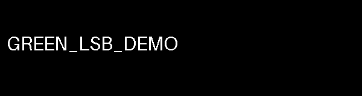

Abacus / Cyber Ops / CTF Writeups / Forensics / The Flag Was Drawn in the Green Bits
The Flag Was Drawn in the Green Bits
The bits were not spelling characters. They were drawing them.
Summary
The challenge. Recover a flag hidden in one color channel of a provided PNG image.
What I did. I checked the container, compared per-channel LSB planes, ruled out a packed text stream, and rendered the green plane at full resolution.
The result. The green bit-0 plane showed handwritten glyphs. The case record reports that the operator resolved two ambiguous characters and received platform acceptance.
The limit. The accepted flag and submission transcript are withheld. The carrier and rendered plane support the visual recovery, while the platform result remains operator-reported.
Case details
| Field | Value |
|---|---|
| Category | Forensics - Steganography |
| Difficulty | Medium |
| Tags | PNG, LSB steganography, bit-plane analysis, green channel, visual payload, steganalysis triage |
| Status | Solved |
| Available material | One 8-bit RGBA PNG and a hint about a color channel |
| Goal | Recover the flag drawn into a bit plane |
| Reported result | Operator submitted a corrected reading and received platform acceptance |
| Verification boundary | Local PNG and plane checks confirm the hidden drawing; acceptance was not replayed |
Defensive proofs of concept for image triage: browse the offline tools and tests on GitHub and the invented carrier, rendered example, and control images.
1. Problem Statement and Threat Scenario
I had one color PNG and a hint pointing toward a color channel. The task was to recover a flag from the image, not to interact with a service. I could work entirely offline with the file. The image was an RGBA bat cutout; at ordinary viewing size, the visible picture gave no obvious text away.
This was a steganography puzzle with no observed adversary or defender. A hidden bit plane could be used as a covert media channel elsewhere, but this challenge gave me no exfiltration path, host telemetry, or campaign to investigate. I keep that operational idea labeled as a proposed analogy in the later sections.
2. Techniques, Tooling, and Actions Taken
I started outside the pixels. The carrier was an 8-bit RGBA PNG. Its chunk sequence was IHDR, a run of IDAT chunks, then IEND at the exact end of the file. There was no appended payload and no tEXt, zTXt, or iTXt chunk to explain the hint. I hashed the file before processing so a later render would not replace the evidence. The container check narrowed my attention to pixel values; it did not prove the image lacked every possible hidden technique.
I extracted bit 0 from red, green, and blue and compared how well each raw 0/1 plane compressed. Green stood out. In the retained carrier, zlib compressed its raw plane to 18,688 bytes, against 300,013 for red and 299,645 for blue. That makes green about 6% of the next-smallest plane under this particular test. It agreed with the hint and gave me a reason to inspect green first. Transparent black space and ordinary image structure can also affect bit-plane statistics, so I used the ratio as a lead, then looked at the plane.
My first decoding idea was wrong. I treated the green LSBs as packed ASCII, trying both bit orders and row- and column-major pixel orders. The results were noise. Searching the stream for flag-shaped fragments produced statistical false positives. I stopped treating the bits as bytes and rendered them in their original spatial positions. The plane contained a hand-drawn flag. The source account says the first transcription missed two leetspeak-like glyphs; the operator's accepted submission settled that reading. I can independently see the drawing in the retained image, but the exact accepted value and submission transcript are not part of this public record.
3. Tooling and Scripts
The first pass walked the PNG signature and chunk lengths. That is how I separated container hiding from a pixel payload. The offline extractor makes this check more careful: it bounds the file and image size, verifies each chunk CRC, requires IHDR first and IEND last, rejects bytes after IEND, and renders one chosen channel and bit. The tool guide explains its input and output. It uses Pillow and Python's standard library; NumPy is not required.
python -B artifacts/extract_green_lsb.py fixtures/fixture_green_lsb.png view.png --channel g --bit 0
That command writes an 8-bit grayscale PNG whose pixel values are only 0 and 255. It reads the invented carrier and reveals the invented rendered message, GREEN_LSB_DEMO. The command refuses to overwrite an existing view.png.


For the channel check, the triage script reports per-channel set-bit fraction, binary entropy, and zlib size of the raw plane bytes. Its result is a short list for manual review, not an answer reader. The deterministic fixture generator, tests, random baseline, harmless striped image, and random-looking near miss make its behavior visible. All included code runs offline.


4. Concept Explanation
The PNG specification describes a signature and a sequence of typed chunks. IHDR records the image properties, IDAT carries compressed image data, and IEND closes the datastream. Text chunks are optional. A valid end marker at the end of the file helps rule out appended data. It does not tell me what individual decoded pixels contain.
An 8-bit red, green, blue, or alpha channel stores a value from 0 to 255 at each pixel. Bit 0 changes that value by one. With the composite image on screen, that difference is usually hard to notice. Isolating bit 0 from one channel gives me one binary value for every original pixel. Mapping zero to black and one to white preserves the spatial arrangement, so drawn strokes reappear where they were placed.
Random-looking bit planes usually resist compression, while broad strokes and blank space often compress well. That is the reason I compared channels before decoding text. It is a heuristic, not a general law of photographs: transparency, flat colors, synthetic art, and image processing can produce structured planes without a hidden message. The striped control demonstrates that false positive. A payload whose bits still look random can evade this test; the near-miss carrier demonstrates that limit.
The final distinction is representation. A sequence of bits might encode characters in a byte order, or the bit positions might make a picture of characters. My failed ASCII pass and the visible green-plane glyphs separated those possibilities in this case.
5. Exploit / Analysis Mechanics
The author changed the green channel's least-significant bit per pixel so the bit plane itself drew the answer. A normal view mixed that one bit with the rest of the image. My recovery kept every pixel in place and applied the same operation at each point:
green_bit_0(x, y) = green(x, y) & 1
visible(x, y) = 255 * green_bit_0(x, y)
This is lossless for that bit plane. No stream ordering, byte alignment, character set, or XOR key is needed to see a drawing. The green compressibility lead, the rendered strokes, and the flag-shaped text support the recovery from different angles. The extracted plane is legible but handwritten. Two characters were ambiguous on the first read, so visual inspection alone did not establish the exact accepted string. The case record says the operator corrected the transcription and the platform accepted it.
Only bit 0 of green carried the drawn payload here. A different image might hide bytes, use another bit, spread data across channels, or preserve noise-like statistics. The extractor can render a chosen channel and bit, but it does not interpret every possible steganography scheme.
6. Lessons Learned
The order saved time: identify the file, check the container, compare bit planes, then decide whether to read bits as bytes or as a picture. The green-plane ratio was the cheap discriminator. I still needed to render it. A low compressed size on its own could have meant ordinary flat or synthetic image content.
The wrong ASCII path was useful evidence. Both bit orders and both traversal directions produced noise, and the flag-shaped search hits did not survive inspection. Once I treated spatial placement as part of the encoding, the drawing made sense. The two uncertain handwritten glyphs were a separate problem. I would record candidate readings before submission and keep the operator's acceptance distinct from my visual guess.
| Exercise observation | Operational analogy |
|---|---|
| One RGB channel's bit plane contained a drawing | Media could carry covert content in pixel bits |
| Cross-channel compressibility singled out green | A file scanner could prioritize unusual planes for review |
| A human read the rendered glyphs | A detector may need an analyst to confirm the content |
Those are proposed uses of the method. The puzzle itself did not show an exfiltration event.
7. Operational Extrapolation
Individual Practitioner Development
This case tied together PNG structure, pixel-channel extraction, simple statistics, and visual reading. A useful next exercise is to sweep every channel and bit plane, then compare the rankings on a labeled set of ordinary and stego images. The current triage script reports one RGB bit index at a time. It has not been evaluated on a representative corpus.
Security Operations
A realistic use is a file-triage pipeline that already collects media under an authorized investigation or gateway policy. It could compute per-channel bit-plane statistics, queue unusual images, and let an analyst render the candidate plane. It should preserve the original file, hash, acquisition context, and review decision. The local proof of concept shows the selection logic and an expected false positive. It has no mail gateway, DLP feed, host sensor, or measured detection rate behind it.
Intelligence Operations
Covert media is a possible collection topic, but this challenge supplies no actor, source network, or campaign. I would not promote the drawn flag or its image hash as threat intelligence. In a real case, any intelligence conclusion would depend on the carrier's provenance, surrounding communications, and independent evidence of intent.
8. Reusable Tools, Scripts, and Artifacts
The reusable primitive is the bit-plane extractor. Its inputs are a bounded 8-bit RGB/RGBA PNG, an output path, --channel {r,g,b,a}, and --bit {0..7}. It validates the container, leaves the source untouched, and writes a visible black-and-white plane. The output includes dimensions, chunk names, and set-pixel count. The positive synthetic carrier and rendered view let anyone reproduce the visual step without a challenge answer.
The RGB triage script ranks one bit across red, green, and blue by raw-byte zlib size and reports binary entropy. The fixture generator creates an invented positive, benign random baseline, striped false positive, and random-looking missed payload. The tests and guide record expected behavior and commands. Three local test groups passed, including container tampering, the visible positive, and the controls. These tools need Python and Pillow; no network service or NumPy package is required.
9. Framework Applicability and Mapping
MITRE ATT&CK T1027.003, Steganography, describes information concealed in another file. It is an analogical fit for the bit-plane method. The challenge was an offline puzzle, so I did not observe an adversary using steganography for defense evasion. I would not attach a campaign or tactic claim to this image alone.
OWASP web categories have no target here. STRIDE needs a system and trust boundaries beyond the single file. A D3FEND or control mapping could be useful for a real media pipeline, but none was assessed in this challenge. The practical defensive output is the bounded file triage and its evidence limits in Section 12.
10. Threat Intelligence and Standards Integration
There is no production IOC, actor, infrastructure, or sharing context for STIX/TAXII. A STIX attack-pattern object would repeat the generic steganography concept without adding facts from this case. The accepted flag is an answer, not an indicator. The PNG standard is the useful technical reference for file structure, and Pillow's image API describes the channel operations used by the local tool.
11. Controls Mapping and Mitigation Realization
The challenge does not identify an organization, a media-ingest service, or an assessed control. Assigning NIST, CIS, STIG, CMMC, PCI DSS, or HIPAA control status to it would overstate the evidence. For a real pipeline, I would propose a review step for anomalous media, safe image decoding, bounded resource use, original-file preservation, and an analyst decision before treating a carrier as malicious. That is an implementation idea, not an implemented control or a claim that this heuristic alone prevents covert content.
The guide gives the tool's data contract and false-positive cases. The triage script is a seed for evaluating this proposal, with threshold selection left to a representative clean and stego image set.
12. Indicators, Artifacts, and Detection Engineering
This case's signal lives in pixels, not logs. A YARA byte pattern, Sigma rule, KQL query, or SPL search would lack the discriminating data unless a separate image-analysis pipeline had already extracted its features. The proposed hunt is simple: among media files collected under a legitimate workflow, compare RGB bit-0 planes and review a channel whose raw plane compresses far more than the others. The triage script names a channel only when its compressed size is at most one quarter of the next-smallest RGB plane. That threshold is a local demonstration setting.
The positive fixture selects green and renders a visible synthetic message. The random baseline stays clear. The striped image also selects green even though it carries no secret, an expected false positive. The random-looking near miss stays clear despite its constructed payload bits. These checks show why a candidate needs visual review and why a clear result cannot exclude all steganography. Production validation would need labeled ordinary and stego files, documented thresholds, acquisition provenance, and measured review workload. None of that was available in the puzzle.
13. Visual Artifact
The flow diagram above follows the file-to-pixel decision: container check, channel ranking, failed byte interpretation, green-plane rendering, and operator-reported acceptance. For a safe visual example, the synthetic rendered plane shows how drawn text appears after bit isolation:

The actual handwritten flag is intentionally absent from this visual. The extractor lets a reader repeat the transform on the invented carrier.
14. References
- MITRE ATT&CK T1027.003, Steganography: analogical technique mapping in Section 9.
- W3C, Portable Network Graphics Specification, Third Edition: PNG chunks, signature, and datastream structure in Sections 3 and 4.
- Jessica Fridrich, Steganography in Digital Media: background on image steganography and statistical triage in Sections 4 and 12.
- Pillow Image module documentation: channel extraction and grayscale rendering used by the proof of concept.